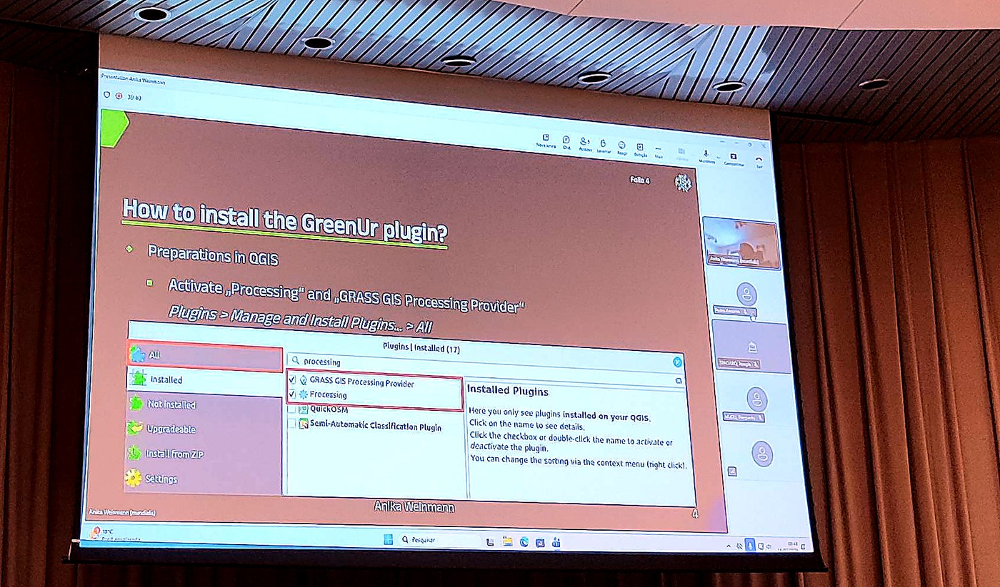
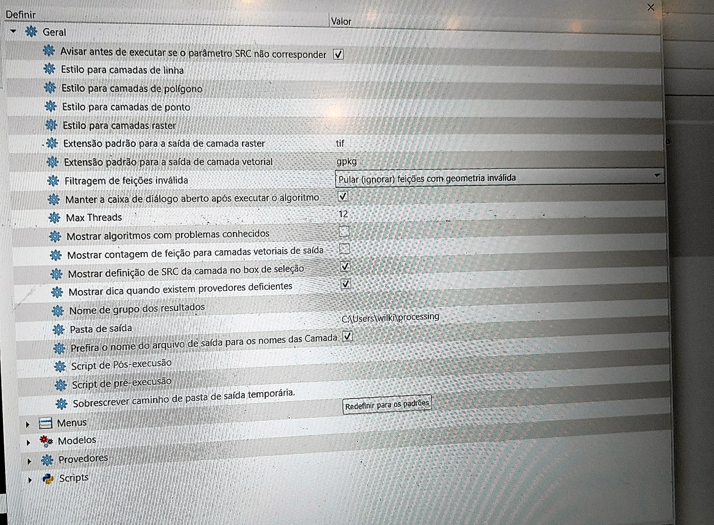
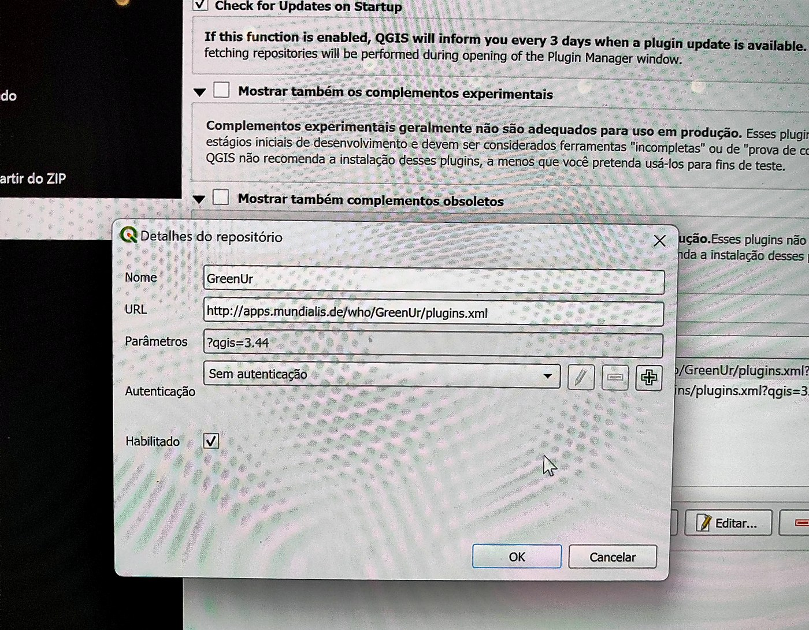
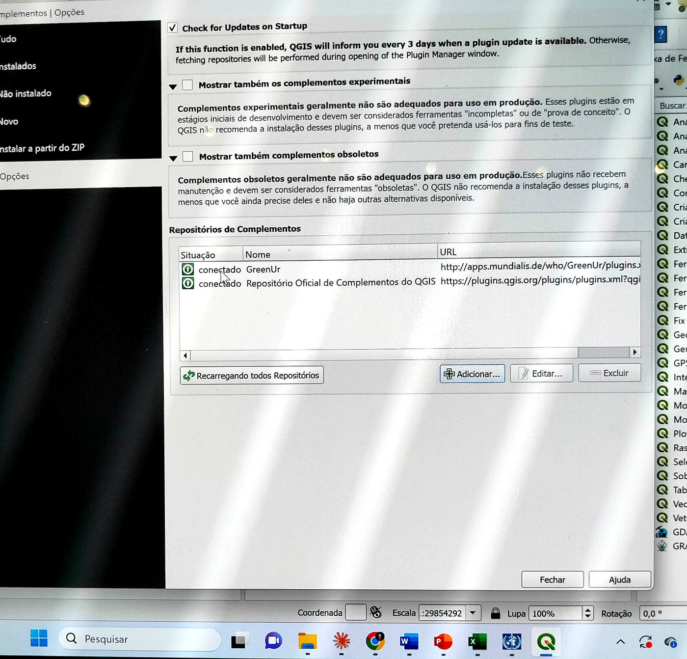
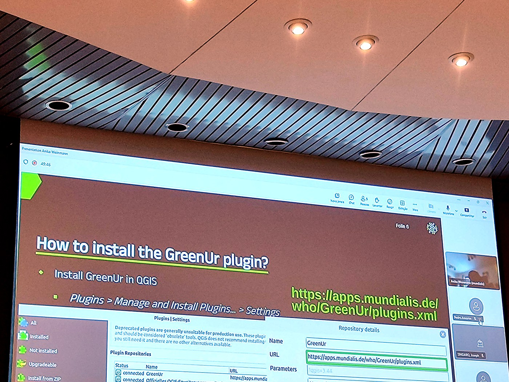
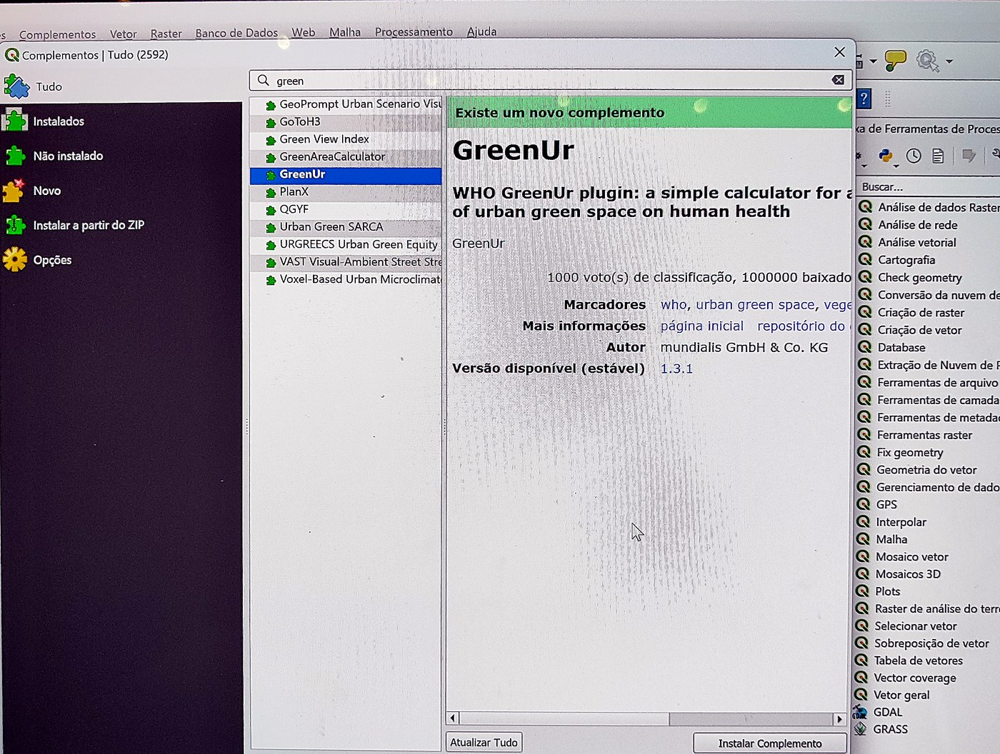

Baixe e instale o QGIS versão 3.44 pelo site oficial qgis.org/download. O GreenUr 1.3.1 exige versão recente da série 3.x; o parâmetro usado no workshop foi ?qgis=3.44.
No QGIS, vá em Complementos > Gerenciar e Instalar Complementos > Tudo. Busque por "processing" e confirme que estão marcados e ativos:
São pré-requisito porque o GreenUr executa parte dos cálculos via GRASS.

Vá em Configurações > Opções > Processamento > Geral. Localize Filtragem de feições inválida, dê duplo clique no valor ao lado e escolha Pular (ignorar) feições com geometria inválida. Isso evita que geometrias inválidas interrompam a execução no meio.


Vá em Complementos > Gerenciar e Instalar Complementos > Opções. Em Repositórios de Complementos, clique em Adicionar. Preencha Nome: GreenUr, e a URL abaixo. Deixe Sem autenticação e Habilitado marcado, e clique OK. O status deve ficar "conectado".
https://apps.mundialis.de/who/GreenUr/plugins.xml

Volte para a aba Tudo e digite "green" na busca. Selecione GreenUr (autor mundialis, versão 1.3.1) e clique em Instalar Complemento.
